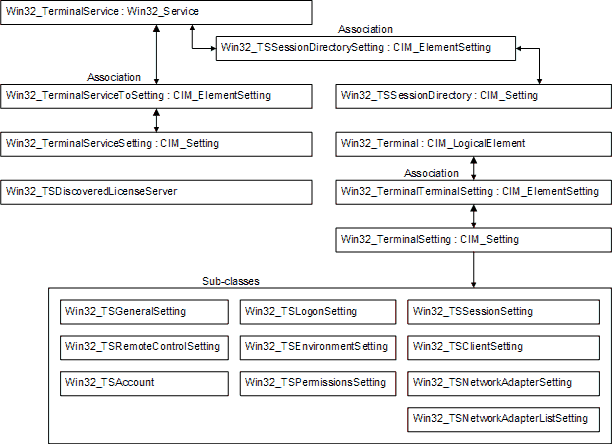

The Remote Desktop Services Configuration WMI provider provides the following classes. An illustration follows.
Represents the association between managed system elements and the setting class defined for them.
The base class for all system components that represent abstract system components, such as profiles, processes, or system capabilities, in the form of logical devices.
The base class for the system element hierarchy.
Represents configuration-related and operational parameters for one or more managed system elements.
represents a terminal.
Represents a terminal error.
a subclass of the Win32_Service class. Win32_TerminalService represents the Element property of the Win32_TerminalServiceToSetting association.
represents the configuration for a Remote Desktop Session Host (RDÂ Session Host) server.
Win32_TerminalServiceToSetting
represents the association between an instance of the Win32_TerminalService class and the setting of a particular Win32_TerminalServiceSetting property.
represents the settings that can be applied to a terminal.
represents the association between a terminal and its configuration settings.
allows deletion of an account that exists on the Win32_Terminal and modification of existing permissions.
defines configuration settings for the Win32_Terminal class related to connection policy.
Win32_TSDiscoveredLicenseServer
Provides details about the discovered Remote Desktop license server.
defines the configuration settings for the Win32_Terminal class including initial program policy.
represents general settings of the terminal such as the encryption level and transport protocol.
defines configuration settings for the Win32_Terminal class related to client logon.
Win32_TSNetworkAdapterListSetting
enumerates the list of network adapters that can be configured for a Win32_Terminal, based on the specified terminal protocol and transport method.
defines various configuration settings for the Win32_Terminal class including properties related to the network adapter and the maximum number of connections allowed.
includes a method to add new accounts to the terminal and a method to restore the default permissions to a terminal.
defines the remote control configuration settings for the Win32_Terminal class.
Defines the Remote Desktop Connection Broker (RDÂ Connection Broker) configuration settings for the Win32_TSSessionDirectorySetting class.
Win32_TSSessionDirectorySetting
Represents the association between an instance of the Win32_TerminalService class and an instance of the Win32_TSSessionDirectory class.
defines configuration settings for the Win32_Terminal class such as time-limits, and disconnection and reconnection actions.
Defines Internet protocol (IP) virtualization settings for a RDÂ Session Host server.
Represents the association between a Win32_TerminalService element class and a Win32_TSVirtualIP setting class.
The following illustration shows the relationships between these classes.

Â
Â